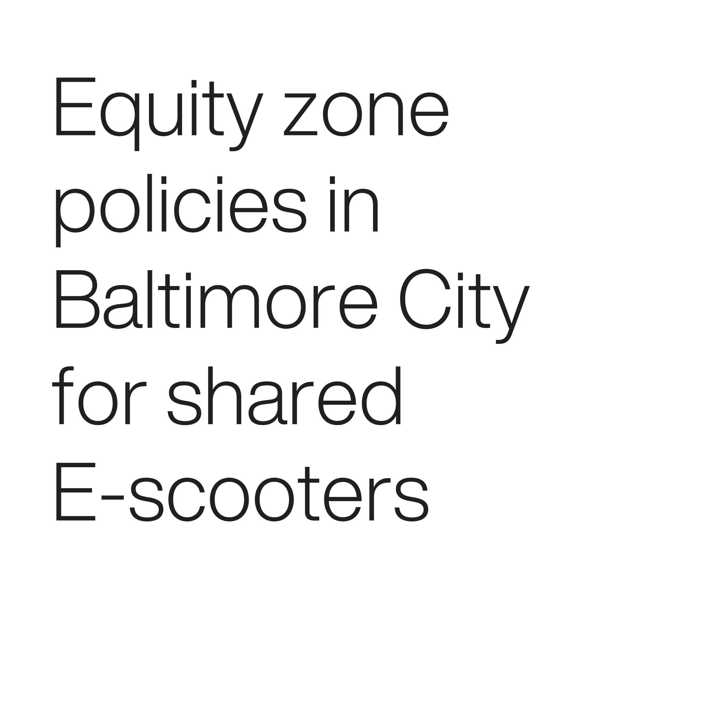
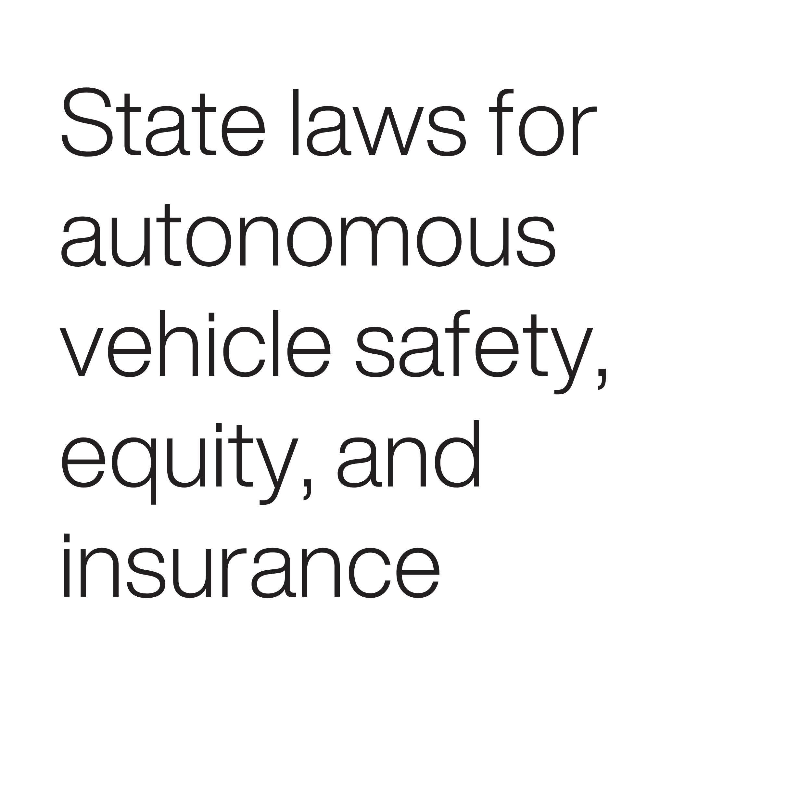
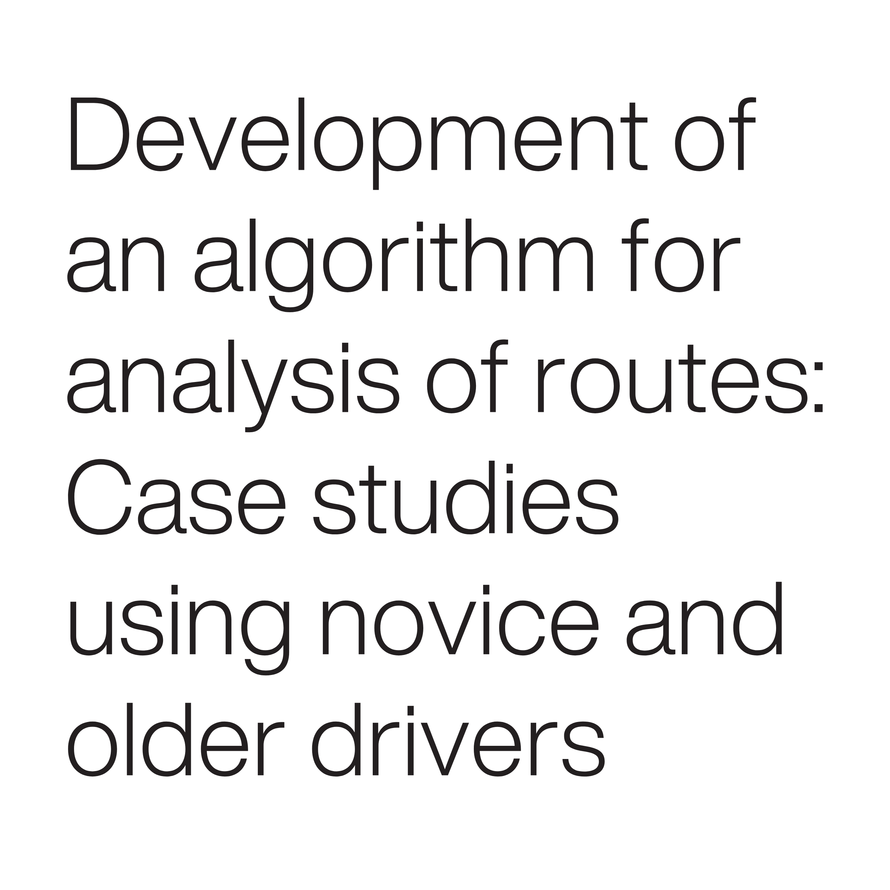
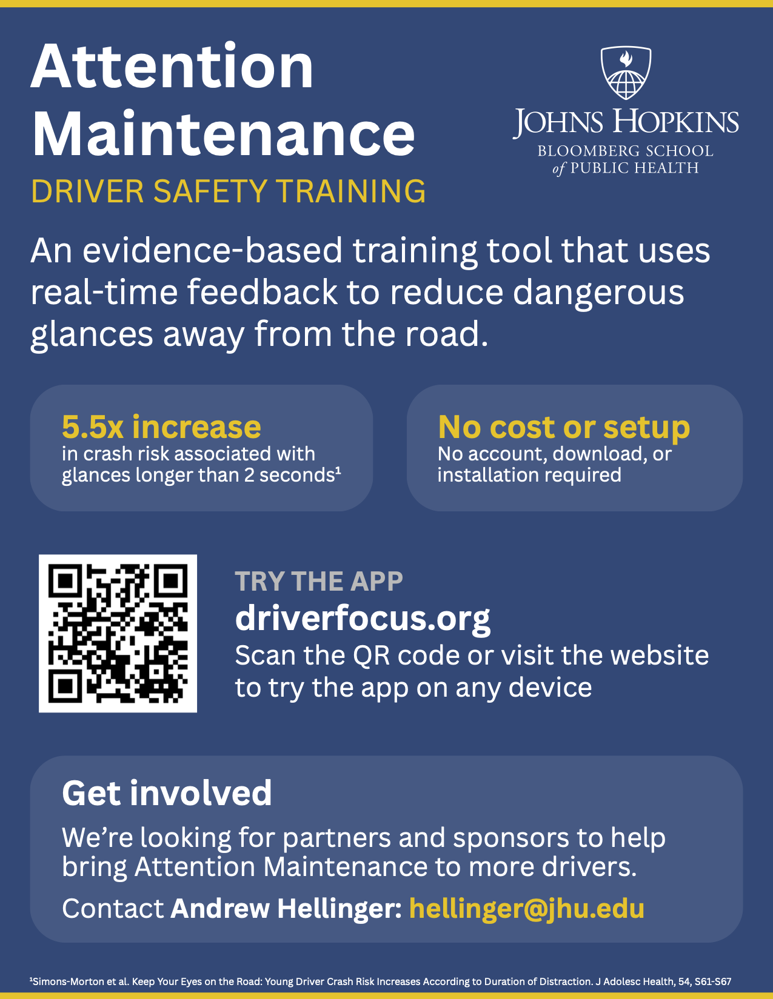
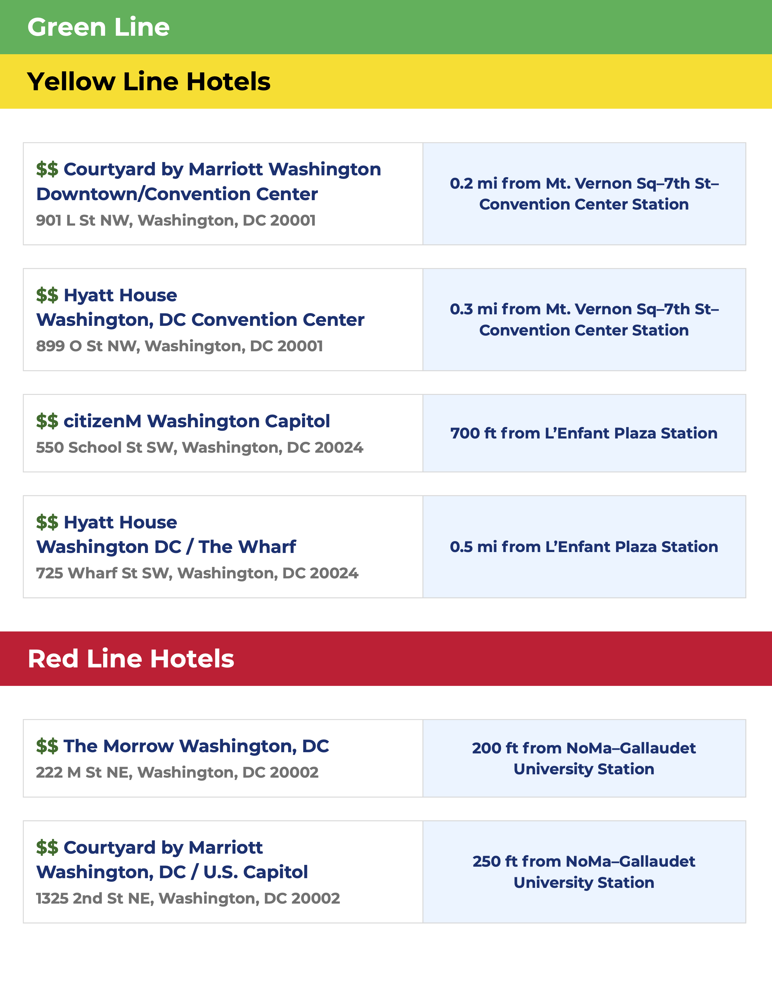

Andrew Hellinger
I work where public health meets transportation safety. For more than eight years
at Johns Hopkins, I have studied how transportation systems shape people's health
and turned that evidence into programs and policy that make getting around safer,
whether you're driving, walking, biking, or rolling.
I see the world through a public health lens, where transportation itself is a
social determinant of health. Many American communities are built on the scale
of the car, with homes, businesses, and schools spaced too far apart to reach
on foot. These communities often lack reliable transit, protected bike lanes,
and connected sidewalks, making driving necessary to reach essentials like work,
school, and healthcare. Yet driving carries its own health risks, from exposure
to pollutants and stress to life-altering injury or death in a crash. That is why
I am drawn to human-scaled street design and the Safe System approach, which designs
roads around human error so that a mistake does not cost a life.
My mission is also shaped by personal experience. When I first moved to DC in 2021,
I was dependent on my car, but I came to appreciate how convenient and enjoyable
Metro, Metrobus, Capital Bikeshare, and the city's growing network of bike lanes
made getting around. Eventually, I decided to sell my car, and living car-free has
since shown me firsthand how good transportation design can empower all road users,
not just drivers, to reach their destinations safely and efficiently.
What I bring:
- Program management: administrative and financial lead for a $5.3 million
NHTSA cooperative agreement, managing budgets, partner organizations,
and deliverables.
- National evidence-based trainings: plan and manage the U.S. Safe System
Academy, an annual week-long training that brought together 67 road safety
experts, advocates, and practitioners from 8 countries in 2026.
- Evidence for policymakers: led a review of 300+ studies on street design
and safety for Baltimore City, and first-authored a published evaluation
of Baltimore's e-scooter equity policies.
- Data analysis: R, Python, and SQL.
- Communication: 11 peer-reviewed articles, a National Academies TRB report,
and talks at the TRB Annual Meeting and the Lifesavers Conference; helping
write ITE guidance on Safe System approach resources for non-technical
audiences.
I am always glad to connect with planners, engineers, advocates, and public servants
working toward safer streets for every road user.
Publications
My research examines how transportation policy, technology, and
design shape road safety. Across 11 peer-reviewed articles and a
National Academies TRB report, I have studied e-scooter equity,
autonomous vehicle laws, teen driving, and GPS-based measures of
driving behavior, contributing everything from survey design and
legal review to data analysis and writing.
view articles



Coding Projects
As I studied computer science at Hopkins, I worked with my peers to design and create a variety of computer
applications. In my current programmer analyst role, I have collaborated with other software engineers to design and create
mobile apps that provide evidence-based training to new teen drivers.
view projects
Design Projects
I taught myself layout, typography, and editorial design in InDesign and Illustrator,
and accessible PDF design in Acrobat. I use these skills to make road safety research
easier to understand and act on, most recently in the Recommendations of the Safe
System Consortium 2026 report, a flyer for the Attention Maintenance app, and an
attendee guide for the Safe System Academy.
view designs

